Chapter 11 Introduction to Linear Regression
11.1 Statistical Models
We are now ready to start studying relationship between variables (columns) in our data. To begin our study of this vast topic we will consider the NYC flight data again. First lets read this data into R.
data("flightNYC")
colnames(flightNYC)## [1] "month" "day" "dep_time" "sched_dep_time"
## [5] "dep_delay" "arr_time" "sched_arr_time" "arr_delay"
## [9] "carrier" "flight" "origin" "dest"
## [13] "air_time" "distance"Lets begin is a simple example by considering the relationship between the distance (flight distance in miles) and the air_time (flight time in minutes). From high school physics we know these should linearly related in theory, and this is easy enough to examine by making a scatter plot of these two variables:
plot(flightNYC$distance, flightNYC$air_time/60, xlab = "Flight Distance in Miles",
ylab = "Flight Time in Hours", main = "Flight Distance versus time", col = "blue",
cex = 0.5)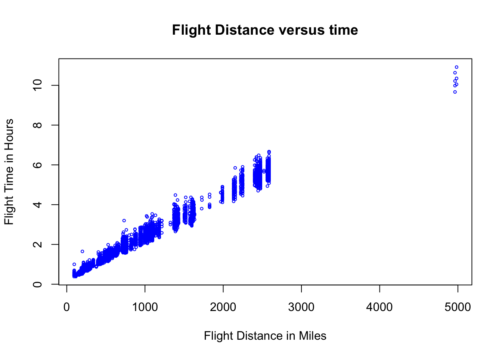
This plot shows the expected trend that longer distance flights generally take longer to complete, and intuitively in describing this trend we might draw a line through this cloud of points. However, notice that we have some significant variation in the flying times which are going about the same distance. This may have to do with many possible factors (weather, aircraft type, seasonal effects, airport approach requirements, etc).
Also notice that we the vast majority of the flights are less than 3000 miles and we have a large gap in out data set for flights between 3000-5000 miles. Since we don’t have any data in this interval it is best that we remove the very long flights from the data and focus on the less than 3000 mile flights.
flightNYC = subset(flightNYC, flightNYC$distance <= 3000)This leads to the following set of questions we would like to answer about this data set:
How can we tell is this effect is real or just us seeing trends in random data? (This is obvious in this case…..but not always the case!)
If the effect is real, and how can we measure the strength of this effect?
How much information does knowledge of the distance give us about the flying time?
Given the flight distance can we we make an accurate prediction for the flight time?
To answer these questions we need to build a statistical model for the flying time based on the distance. A simple model for the effect of distance on flight time is a linear model: \[T_{flight}=\beta D+\alpha+\epsilon_i\] This is called a linear model because it takes the form of \(y=mx+b\). In this case \(\alpha\) is the y-intercept and \(\beta\) is the slope of the line. The \(\epsilon_i\) is an assumed noise term which allows for random errors in the measurements. We assume these errors have a normal distribution with mean zero and standard deviation \(\sigma_r\). For our flight model we call \(T_{flight}\) the response variable (y axis) and \(D\) is the called the explanatory variable (x axis).
To specify the model we will need to find the slope \(\beta\) and y-intercept \(\alpha\).
Exercise 11.1 Does a unique line exist which goes through all of our data points? If you fit a line to the data points what are you attempting to minimize?
Exercise 11.2 What do you expect the slope \(\beta\) to be if the explanatory variable (distance) and the response variable (flight time) are completely unrelated?
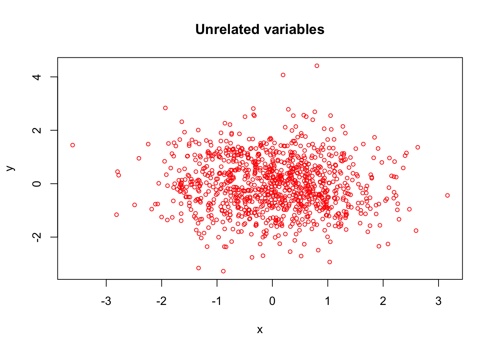
Exercise 11.3 What is your intuition for sign (positive/negative) for \(\beta\) in the flight data set? Extra: What physical quantity does our \(\beta\) correspond to?
11.2 Fitting a Linear Model in R
It turns out that a very way to choose the best \(\alpha\) and \(\beta\) is to minimize the sum of square distance between the data points and the model predictions. Suppose, we have a model with \(N\) data points \((x_1,y_1), (x_2,y_2), ... (x_N,y_N)\), then we can measure the Cost of the model for one data point \(y_j\) by finding the distance (squared) between this data point and the predicted value \(\hat{y_j}(x_j)=\alpha+\beta x_j\). Summing up all these errors or residuals gives us a measure of how well the model describes the data. \[ \text{Cost}(\alpha, \beta)=\sum_{j=1}^N r_j^2=\sum_{j=1}^N [y_j-(\alpha+\beta x_j)]^2 \]
The below plot shows the residuals as green arrows for a guess of \(\alpha=10\), \(\beta=1.5\) for the flight model. The total cost is also printed below for this parameter choice. Note, I reduced the number of data points (circles) in this plot just for the purpose of being able to see the green arrows (residual) values more clearly.
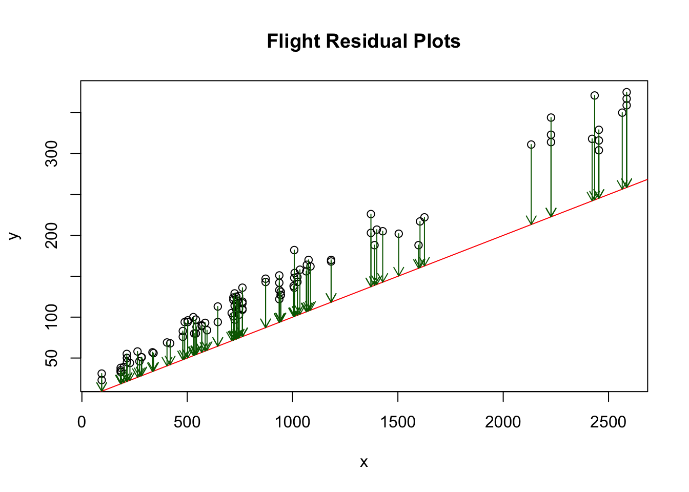
## [1] "Cost: "
## [1] 281466.2Now I want to show you how to use R to fit a linear model and view the results. Here is the command to build a linear model for our flying data and view a summary of the results.
res.flying = lm(air_time ~ distance, data = flightNYC) ##notice the format y~x response~explanatory
summary(res.flying)##
## Call:
## lm(formula = air_time ~ distance, data = flightNYC)
##
## Residuals:
## Min 1Q Median 3Q Max
## -46.475 -7.273 -1.248 6.470 81.136
##
## Coefficients:
## Estimate Std. Error t value Pr(>|t|)
## (Intercept) 18.193924 0.321725 56.55 <2e-16 ***
## distance 0.126425 0.000254 497.73 <2e-16 ***
## ---
## Signif. codes: 0 '***' 0.001 '**' 0.01 '*' 0.05 '.' 0.1 ' ' 1
##
## Residual standard error: 12.86 on 4991 degrees of freedom
## Multiple R-squared: 0.9803, Adjusted R-squared: 0.9802
## F-statistic: 2.477e+05 on 1 and 4991 DF, p-value: < 2.2e-16We will learn what all this output (stats poop) means later. Let’s see what our residual plot looks like for these optimal values:
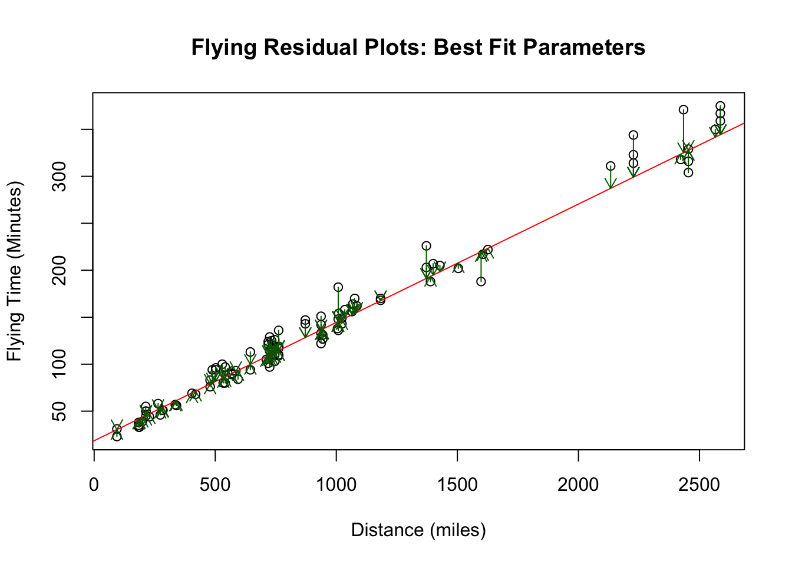
## [1] "Cost: "
## [1] 17942.86Notice that the cost (sum of all the residuals squared has decreased by quite a bit from our initial guess). This is the best (optimal) values of \(\alpha\) and \(\beta\) we could possibly choose. Any other choice of \(\alpha, \beta\) would give a larger cost value.
Now we can look at the the estimates for the \(\alpha\) and \(\beta\) parameters that R finds:
res.flying$coefficients## (Intercept) distance
## 18.1939236 0.1264254The \(\beta\) slope parameter is what is most important for our flying model. The best point estimate for \(\beta\) is \(\approx 0.126\). In the context of the model this means that for every 1 mile increase in distance we should expect the flying time to increase by about \(0.12\) minutes. We can see how well the value of \(\beta\) is determined by the data by finding the confidence interval for \(\beta\):
confint(res.flying, level = 0.99)## 0.5 % 99.5 %
## (Intercept) 17.3648969 19.02295
## distance 0.1257709 0.12708We can also make a plot of the line that R fit to our flying data. We can see that the line captures some of the big picture trends in the data.
plot(flightNYC$distance, flightNYC$air_time, main = "Flying Distance versus Time Linear Model",
xlab = "Distance (Miles)", ylab = "Time (Minutes)", col = "red", cex = 0.3)
abline(res.flying, col = "blue")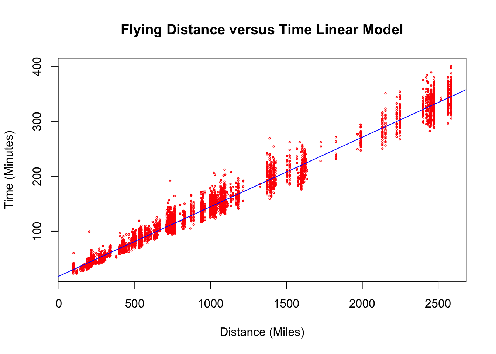
The \(\alpha\) term (y-intercept) here tells us that flights which go no distance at all (0 miles) should be expected to take somewhere between 17-19 minutes. This is a bit more difficult to interpret as presumably nobody is booking flights which take off and go nowhere. However, we could regard this value as a measurement of the inevitable inefficiency of airports where planes must take turns to take-off and land and can only approach from particular directions. This effect generally adds something like twenty minutes to flights out of NYC.
11.2.0.1 House Sales Price vs Square Footage
Lets consider a more interesting problem. In this section we will use linear regression to understand the relationship between the sales price of a house and the square footage of that house. Intuitively, we expect these two variables to be related, as bigger houses typically sell for more money. The data set comes from Ames, Iowa house sales from 2006-2010. First, lets read this data in and make a scatter plot of the sales price versus the square footage.
data("AmesHousing_Regression") ##from HannayAppliedStats package
house <- AmesHousing_Regression ##rename this data
house <- dropLowFactors(house, factor.column = 3, threshold = 30) ##from HannayApplied Stats drop all neighborhoods with less than 30 data points
head(house)## Square.Feet.log10 SalePrice.log10 Neighborhood Bathroom
## 1 3.219060 5.332438 NAmes 1.0
## 2 2.952308 5.021189 NAmes 1.0
## 3 3.123525 5.235528 NAmes 1.5
## 4 3.324282 5.387390 NAmes 2.5
## 5 3.211921 5.278525 Gilbert 2.5
## 6 3.205204 5.291147 Gilbert 2.5We can see this has the log10 of the selling price, the square footage and the number of bathrooms in the house.
plot(house$Square.Feet, house$SalePrice, main = "Real Estate Prices in Ames Iowa (Color by Neighborhood)",
xlab = "Square Footage (log10)", ylab = "Sale Price ($) log10", col = house$Neighborhood,
cex = 0.5)
As expected we can see from the plot that square footage is somewhat important in determining the sales price of the house, but we can see that their is significant variation in the sales price for any given sqft size. Let’s try and build a linear model for the relationship between the sqft of the houses and the sales price.
res.house <- lm(SalePrice.log10 ~ Square.Feet.log10, data = house)
summary(res.house)##
## Call:
## lm(formula = SalePrice.log10 ~ Square.Feet.log10, data = house)
##
## Residuals:
## Min 1Q Median 3Q Max
## -0.89909 -0.06464 0.01245 0.07581 0.37552
##
## Coefficients:
## Estimate Std. Error t value Pr(>|t|)
## (Intercept) 2.33795 0.05115 45.71 <2e-16 ***
## Square.Feet.log10 0.91365 0.01620 56.38 <2e-16 ***
## ---
## Signif. codes: 0 '***' 0.001 '**' 0.01 '*' 0.05 '.' 0.1 ' ' 1
##
## Residual standard error: 0.1225 on 2832 degrees of freedom
## Multiple R-squared: 0.5289, Adjusted R-squared: 0.5287
## F-statistic: 3179 on 1 and 2832 DF, p-value: < 2.2e-16Lets look to see if the slope we found is significant (relative to a slope of zero):
confint(res.house, level = 0.99)## 0.5 % 99.5 %
## (Intercept) 2.2061000 2.4697938
## Square.Feet.log10 0.8718869 0.9554217We can say that the slope is significantly greater than zero with a significance level \(\alpha=0.01\) since this 99% confidence interval doesn’t include zero. Finally, lets plot our regression line on the scatter plot:
plot(house$Square.Feet, house$SalePrice, main = "Real Estate Prices in Ames Iowa (Color by Neighborhood)",
xlab = "Square Footage (log10)", ylab = "Sale Price ($) log10", col = house$Neighborhood,
cex = 0.5)
abline(res.house$coefficients)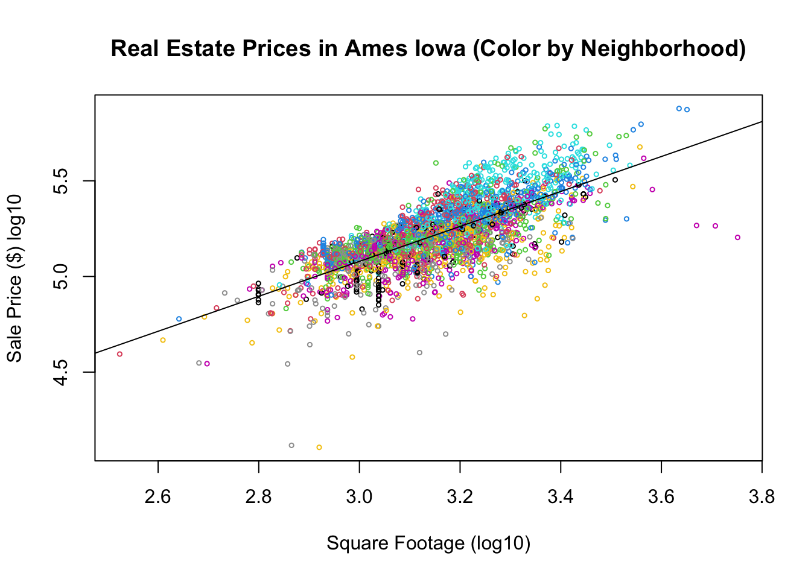
Note, since we are dealing with the logarithms of the price and square footage here we these results tell us to expect a 1% increase in the square footage of the house to increase the Sales price by about 1% as well. In terms of the non logarithm transformed variables our model looks like \[Price=\alpha_0(Sqft)^{\beta}.\] By taking the logarithm of both sides of this we get a linear equation \[\log(Price)=\log(\alpha_0)+\beta \log(Sqft)\]
plot(10^house$Square.Feet, 10^house$SalePrice, main = "Real Estate Prices in Ames Iowa (Color by Neighborhood)",
xlab = "Square Footage", ylab = "Sale Price ($)", col = house$Neighborhood, cex = 0.5)
x <- seq(0, 5000, 1)
alpha0 <- 10^2.35
y <- alpha0 * x^0.9
lines(x, y, type = "l")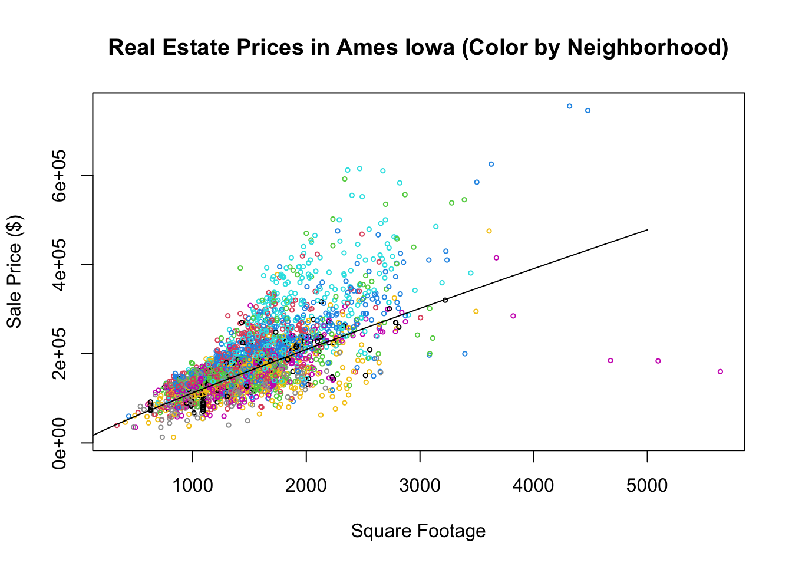
Exercise 11.4 Lets get some practice fitting a linear model in R. Load the alligator data set, from the HannayAppliedStats package. Fit a linear model to this data in R with the weight as the response variable and the snout vent length as the explanatory variable.
+ What does the slope tell you for this model?
+ What is a 95% confidence interval for the slope?
11.3 Assumptions of Linear Regression
Recall the form of our statistical model for linear regression is:
\[ y_j=\beta_1 x_j+\alpha_0+\epsilon_j \]
Linearity: The most important assumption of linear regression is that the response variable \(y\) is linearly dependent on the explanatory variable. This assumption forms the bedrock for the rest of our analysis, so when it is violated the entire model is invalid. The good news is that many relationships in nature are at least approximately linear. We can examine this assumption by looking at a scatter plot of the two variables, and by examining the residual plot.
Independence of Errors: We assume that the errors added to our model (the \(\epsilon_j\) terms) are all independent.
Equal Variance of Errors: We assume the standard deviation of the errors is the same for all values of the explanatory variable \(x_j\). Without this assumption we would need to perform what is called a weighted least squares on our data- which generally requires more data than a normal linear regression. This won’t be covered in the class. The residual plot will reveal if this assumption is at least approximately valid.
Normality of Errors: The least important assumption is that the errors are normally distributed. If this is violated it doesn’t have a effect on the best fit parameters, only in the estimation of the confidence intervals for those parameters. We can verify this assumption by making a QQ plot of the residuals.
11.3.1 Successful Linear Regression
In this notebook we will examine some metrics to test for how well our linear regression has performed for a set of data.
To begin we make some fake data which fits the assumptions for linear regression analysis:
beta0<-2.0;
beta1<-1.0;
x<-seq(0,10,0.05);
y<-beta0+beta1*x+rnorm(length(x),0.0,1.0); ## random, independent normally distributed noise
plot(x,y)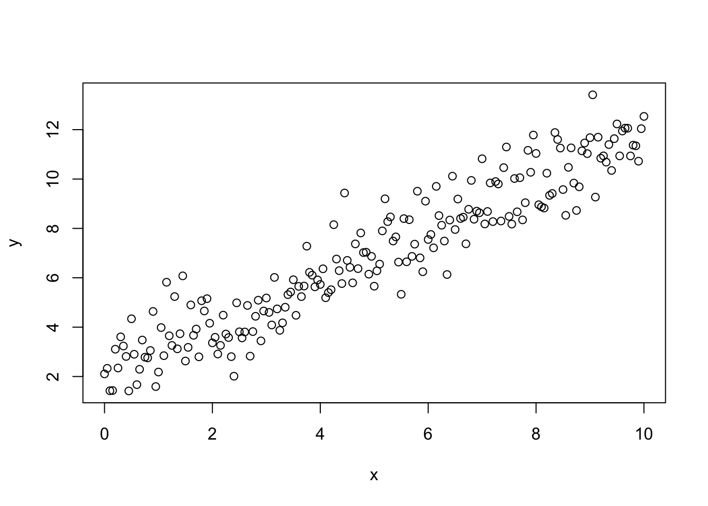
We may know run a linear regression in \(R\) using the \(lm\) command,
lm.results <- lm(y ~ x)we store the results of the linear regression in the lm.results object. If we want a quick summary of the results we can use the summary command:
summary(lm.results)##
## Call:
## lm(formula = y ~ x)
##
## Residuals:
## Min 1Q Median 3Q Max
## -2.40261 -0.75471 -0.03484 0.60492 3.01923
##
## Coefficients:
## Estimate Std. Error t value Pr(>|t|)
## (Intercept) 2.0745 0.1393 14.89 <2e-16 ***
## x 0.9754 0.0241 40.48 <2e-16 ***
## ---
## Signif. codes: 0 '***' 0.001 '**' 0.01 '*' 0.05 '.' 0.1 ' ' 1
##
## Residual standard error: 0.9911 on 199 degrees of freedom
## Multiple R-squared: 0.8917, Adjusted R-squared: 0.8911
## F-statistic: 1638 on 1 and 199 DF, p-value: < 2.2e-16We may get confidence intervals on the parameters by running:
confint(lm.results, level = 0.95)## 2.5 % 97.5 %
## (Intercept) 1.7997706 2.349146
## x 0.9278395 1.022875The following command is part of my package (HannayIntroStats) and makes a few plots automatically which are useful in determining whether linear regression is working on a data set.
diagRegressionPlots(lm.results)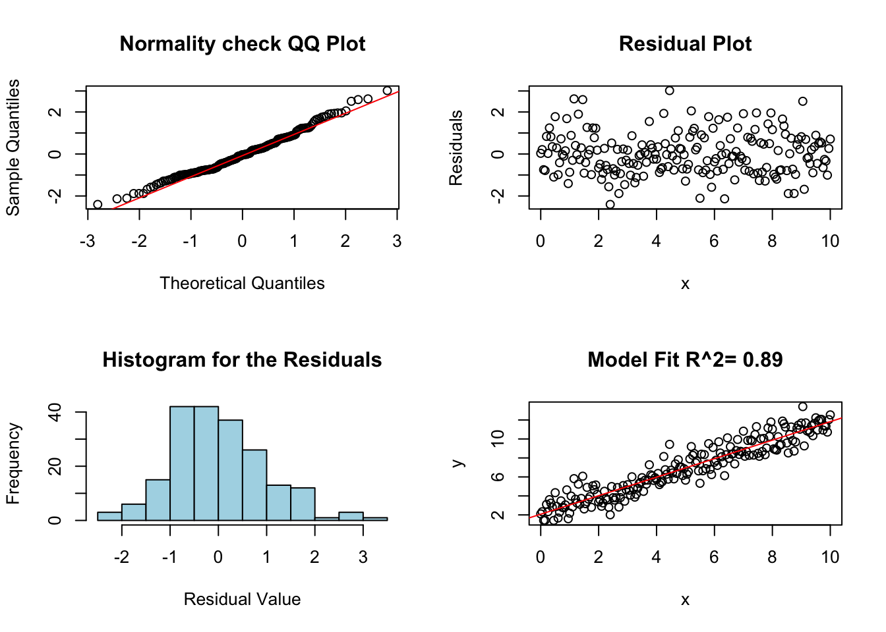
As expected since we created this fake data so that it satisfies each of the assumptions of regression it passes each of our tests. Starting with the histogram and QQ plot of the residuals. We can see from these two plots that the errors are approximately normally distributed (mound shaped histogram, and QQ plot roughly along the line).
The top right plot shows the residual values as a function of the explanatory variable. We will see this plot will help us check for equal variance in the errors. In this case the width of the residuals is approximately the same as the x variable increases. This indicates the variance in the noise terms is constant. This plot also shows a flat tube of points centered around zero. If this is not the case then this indicates the first assumption (linearity) is violated.
The bottom right plot shows the data plotted against the regression line model.
11.3.2 What Failure Looks Like
Now we will see what it looks like when the assumptions of linear regression are violated, and how we can tell from our diagnostic plots. These topics are roughly in the order of how serious these errors are.
11.3.2.1 Not a Linear Relationship between Variables
The most serious error occurs when we attempt to fit a linear regression line to data which clearly does not show a linear pattern. Many times this can be avoided by making a scatter plot of the data before you attempt to fit a regression line. For example, in the below plot we can see that their clearly is a nonlinear relationship between the variables x and y.
y <- beta0 + beta1 * sin(x) + rnorm(length(x), 0, 1)
plot(x, y)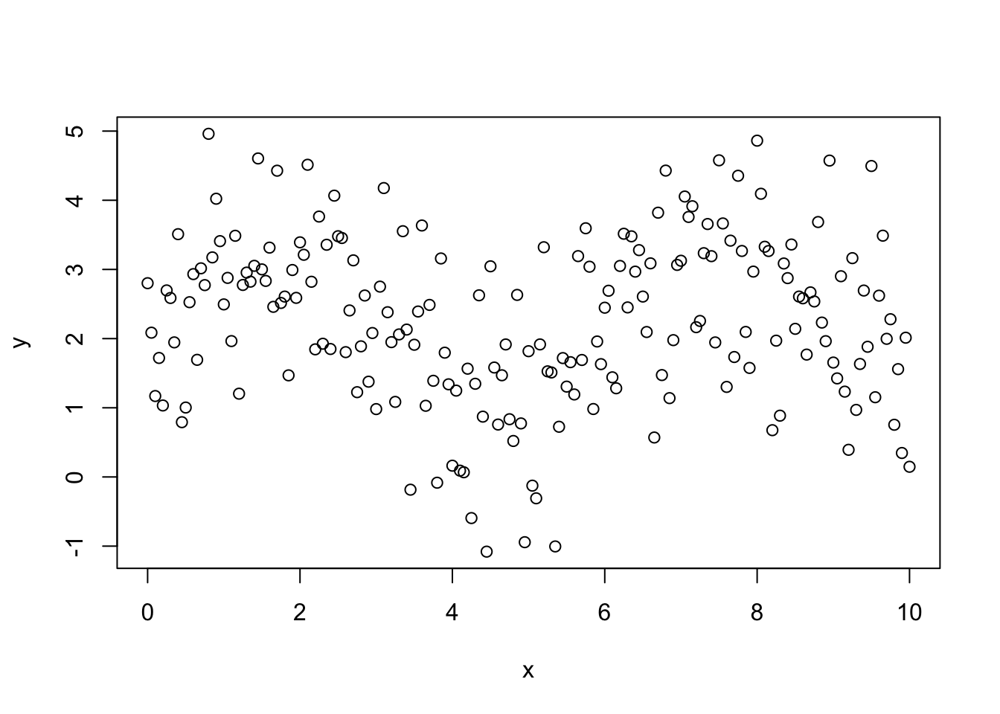
Let’s assume we ignores this and fit a linear model anyway.
lm.fail.notlinear <- lm(y ~ x)
summary(lm.fail.notlinear)##
## Call:
## lm(formula = y ~ x)
##
## Residuals:
## Min 1Q Median 3Q Max
## -3.3562 -0.7768 0.0900 0.8724 2.6430
##
## Coefficients:
## Estimate Std. Error t value Pr(>|t|)
## (Intercept) 2.34904 0.16941 13.866 <2e-16 ***
## x -0.01628 0.02931 -0.556 0.579
## ---
## Signif. codes: 0 '***' 0.001 '**' 0.01 '*' 0.05 '.' 0.1 ' ' 1
##
## Residual standard error: 1.205 on 199 degrees of freedom
## Multiple R-squared: 0.001549, Adjusted R-squared: -0.003469
## F-statistic: 0.3087 on 1 and 199 DF, p-value: 0.5791Now we can make some diagnostic plots for linear regression.
diagRegressionPlots(lm.fail.notlinear)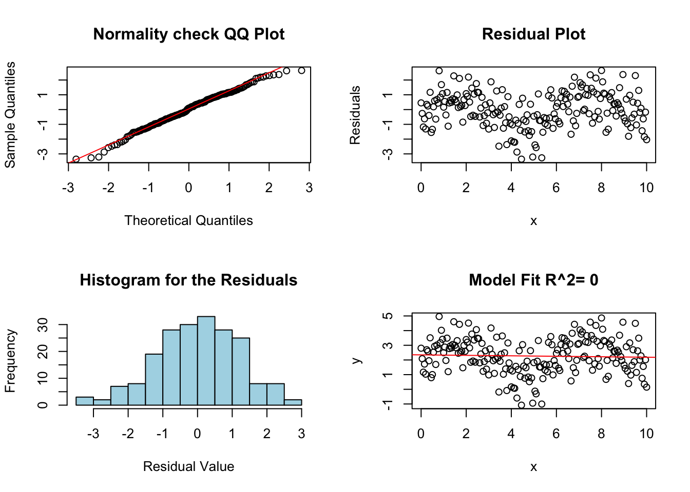
Notice that the residual plot in the top right shows a clear pattern. This is a sign that the relationship between the variables is nonlinear, and a linear model is not appropriate.
11.3.2.2 Errors are not independent
The next most important assumption for linear regression models is that the errors are independent. If this isn’t the case then the errors can give false trends when we fit the model.
noise <- generateCorrelatedErrors(n = length(x), lag = 5, sigma = 2)
y <- beta0 + beta1 * x + noise
plot(x, y)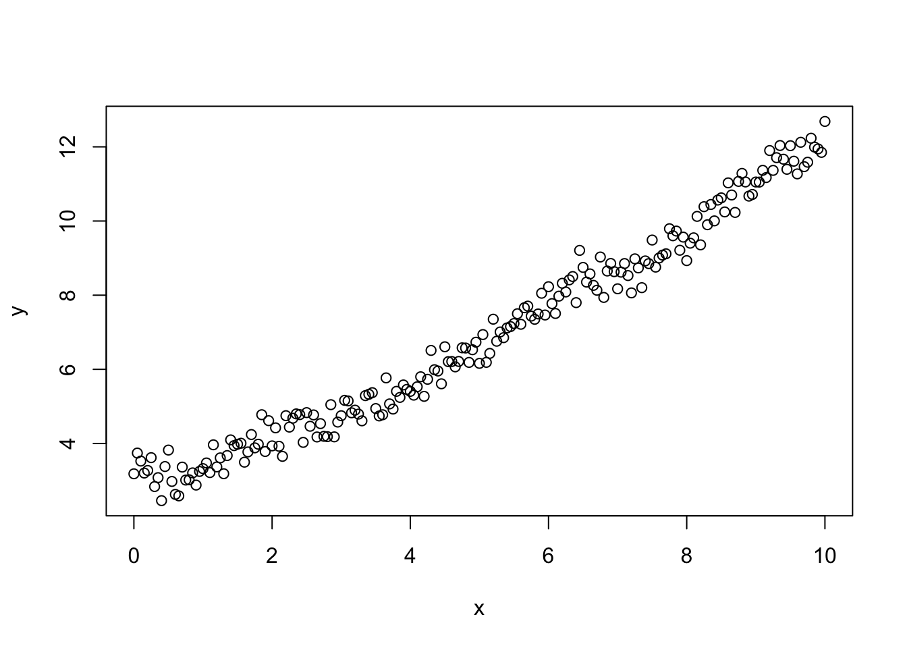
Lets make the linear model as usual.
lm.fail.notind <- lm(y ~ x)
summary(lm.fail.notind)##
## Call:
## lm(formula = y ~ x)
##
## Residuals:
## Min 1Q Median 3Q Max
## -0.94277 -0.35069 -0.03371 0.30615 1.49179
##
## Coefficients:
## Estimate Std. Error t value Pr(>|t|)
## (Intercept) 2.20320 0.06769 32.55 <2e-16 ***
## x 0.94451 0.01171 80.67 <2e-16 ***
## ---
## Signif. codes: 0 '***' 0.001 '**' 0.01 '*' 0.05 '.' 0.1 ' ' 1
##
## Residual standard error: 0.4816 on 199 degrees of freedom
## Multiple R-squared: 0.9703, Adjusted R-squared: 0.9702
## F-statistic: 6507 on 1 and 199 DF, p-value: < 2.2e-16Now we can make some diagnostic plots for linear regression.
diagRegressionPlots(lm.fail.notind)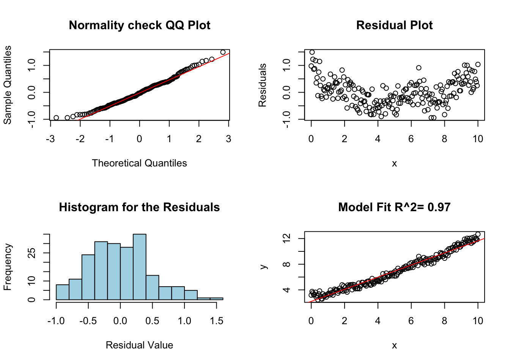
Notice that the residual plot has a weird shape/pattern to it. This is because the noise terms are not independent! These not independent random effects invalidate our linear model in this case. Typically, we can look for non-independence by looking for any non-random effects on the residual plot.
11.3.2.3 Unequal Variance in Residuals
The next assumption of linear regression analysis is that the variance (or standard deviation) of the error terms is constant across all values of the explanatory variable. This is easily checked by looking at the residual plot. If the variance is not constant then the residual plot rectangle will change widths as the explanatory (x) variable changes.
noise <- rnorm(length(x), sd = 0.1) * (1 + x)
y <- beta0 + beta1 * x + noise
lm.fail.var <- lm(y ~ x)
diagRegressionPlots(lm.fail.var)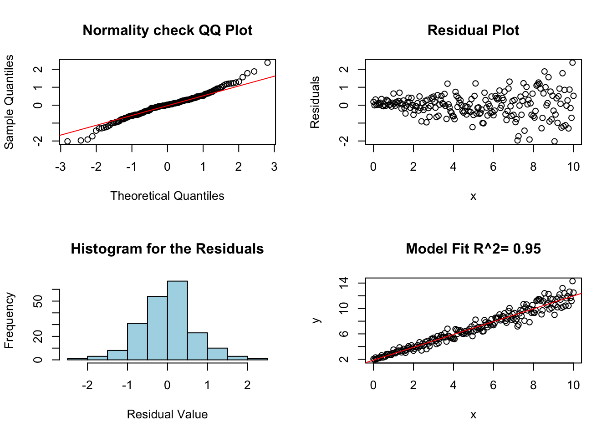
In the above plot the residuals variance increases with x. This issue is correctable if we use weighted least squares analysis.
11.3.2.4 Non-Normality in Noise
This is not a huge concern for most linear regression models as they are not very sensitive to this assumption. However, our error terms need to be roughly mound shaped and continuous in nature to apply linear regression. If these are violated severely it will appear in the QQ plot and histogram of the residuals.
For the example below I use a error (noise) term which follows a t distribution with two degrees of freedom (this has heavier tails then the normal distribution). Since our assumed regression model has less density in the tails our model will underestimate the chances of having large deviations from the curve.
noise <- rt(length(x), 2) #rbimodalNormal(length(x),sigma1=0.25, sigma2=0.25)
y <- beta0 + beta1 * x + noise
lm.fail.normal <- lm(y ~ x)
diagRegressionPlots(lm.fail.normal, cex = 0.5)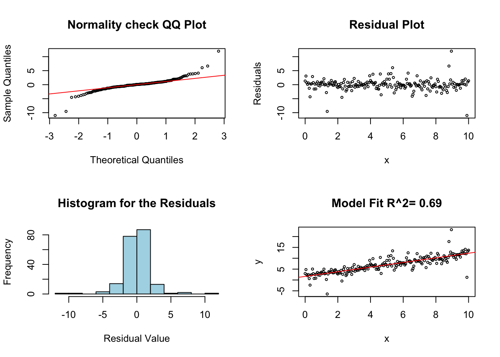
Exercise 11.5 Run these diagnostics on our model for flying times based on distance used in the first section of the notes. Are any of the assumptions of linear regression significantly violated?
Exercise 11.6 Run these diagnostics on the model we formed for house prices. Are any of the assumptions of linear regression significantly violated?
11.4 Goodness of Fit
The last topic we will discuss for linear regression are some measures of the goodness of fits for our models. These measurements are focused on how well the model performs in predicting the response variable in terms of the explanatory variable.
11.4.1 Correlation and Slope
You may have heard the term correlation used before. I have focused mainly on the slope of a regression model \(\beta\) for measuring the strength of a linear relationship between two continious variables. However, the correlation coefficient is also a meaure for this. In fact the two of them are explicity related: \[ \begin{aligned} & \beta=\rho \frac{\sigma_Y}{\sigma_X} \qquad \implies \qquad \rho=\beta \frac{\sigma_X}{\sigma_Y} \\ &\rho=\text{Pearson's correlation coefficient} \\ &\sigma_Y=\text{Standard deviation of the response variable} \\ &\sigma_Y=\text{Standard deviation of the explanatory variable} \end{aligned} \] Notice that if we have \(\sigma_X=\sigma_Y\) then \(\rho=\beta\). An easy way to get \(\sigma_X=\sigma_Y\) is to scale both the explanatory and response variables. Recall that the scale command in R subtracts the mean of a column from the values and divides by the standard deviation. The end result is a value which has mean zero and standard deviation equal to one \(\sigma_x=\sigma_y=1\).
at2 <- scale(flightNYC$air_time)
dist2 <- scale(flightNYC$distance)
# Fit a linear model and show only the computed slope
lm(at2 ~ dist2)$coefficients[2]## dist2
## 0.9900764We can find the correlation between two variables using the corr command in R.
cor(flightNYC$air_time, flightNYC$distance)## [1] 0.9900764The correlation coefficient will always have the property that \(-1 \leq \rho \leq 1\). Values near 1 indicate a strong positive linear relationship, and values near -1 indicate a strong negative relationship.
The correlation coefficient is especially useful when trying to compare the strength of a linear relationship between regression models. Suppose we have formed two models \(y=\beta x_1+\alpha\) and \(y=\beta x_2+\alpha\) and we want to know which of these exhibits a stronger linear relationship. Comparing the slopes directly isn’t a good idea as the two explanatory variables \(x_1\) and \(x_2\) may have different units. Looking at the correlation coefficients removes the units and allows for a direct comparison.
11.4.2 \(R^2\) Coefficient of Determination and Measuring Model Fits
The residual standard error is given by \[\hat{\sigma}=\sqrt{\frac{\sum_{i=1}^N r_i^2}{N-k}}\] where \(N\) is the number of data points and \(k\) the number of parameters estimated. This quantity gives us an idea about the raw accuracy of the regression model in its predictions. In other words the residual standard deviation is a measure of the distance each observation falls from its prediction in the model.
We can also describe the fit of a model using the \(R^2\) value, which gives the fraction of the response variance explained by the statistical model. The unexplained variance is the variance of the residuals \(\sigma_R^2\), and let \(\sigma_Y^2\) be the variance of the response variable data, then \[R^2=1-\frac{\sigma_R^2}{\sigma_Y^2}=\rho^2.\] This quantity is just the correlation coefficient \(\rho\) squared.
If the model tells us nothing about the relationship we expect to find \(R^2=0\) meaning none of the variation in the response variable is explained by the model. On the other hand if the y values lie perfectly along a line we would have \(\hat{\sigma}=0\) which gives \(R^2=1\). In general the values of \(R^2\) will lie somewhere between zero and one.
One final note about the goodness of fit measures. They are often incorrectly used as a total measure of the utility of a model. While it is true that a linear model with a small \(R^2\) value cannot precisely predict the response variable, these models can still tell us important things about our data (and life in general). As an example lets consider some (fake) data on the life expectancy of people given how many pounds of bacon they have consumed.
data("bacon_data")
plot(bacon_data$bacon.lbs, bacon_data$life.expectancy)
lm.bacon <- lm(life.expectancy ~ bacon.lbs, data = bacon_data)
summary(lm.bacon)##
## Call:
## lm(formula = life.expectancy ~ bacon.lbs, data = bacon_data)
##
## Residuals:
## Min 1Q Median 3Q Max
## -23.0173 -6.7654 -0.8563 7.3563 19.1479
##
## Coefficients:
## Estimate Std. Error t value Pr(>|t|)
## (Intercept) 74.84679 2.53536 29.52 < 2e-16 ***
## bacon.lbs -0.10596 0.02189 -4.84 4.84e-06 ***
## ---
## Signif. codes: 0 '***' 0.001 '**' 0.01 '*' 0.05 '.' 0.1 ' ' 1
##
## Residual standard error: 9.534 on 98 degrees of freedom
## Multiple R-squared: 0.1929, Adjusted R-squared: 0.1847
## F-statistic: 23.43 on 1 and 98 DF, p-value: 4.836e-06confint(lm.bacon)## 2.5 % 97.5 %
## (Intercept) 69.8154511 79.8781311
## bacon.lbs -0.1494015 -0.0625155plot(bacon_data$bacon.lbs, bacon_data$life.expectancy)
abline(lm.bacon, col = "blue")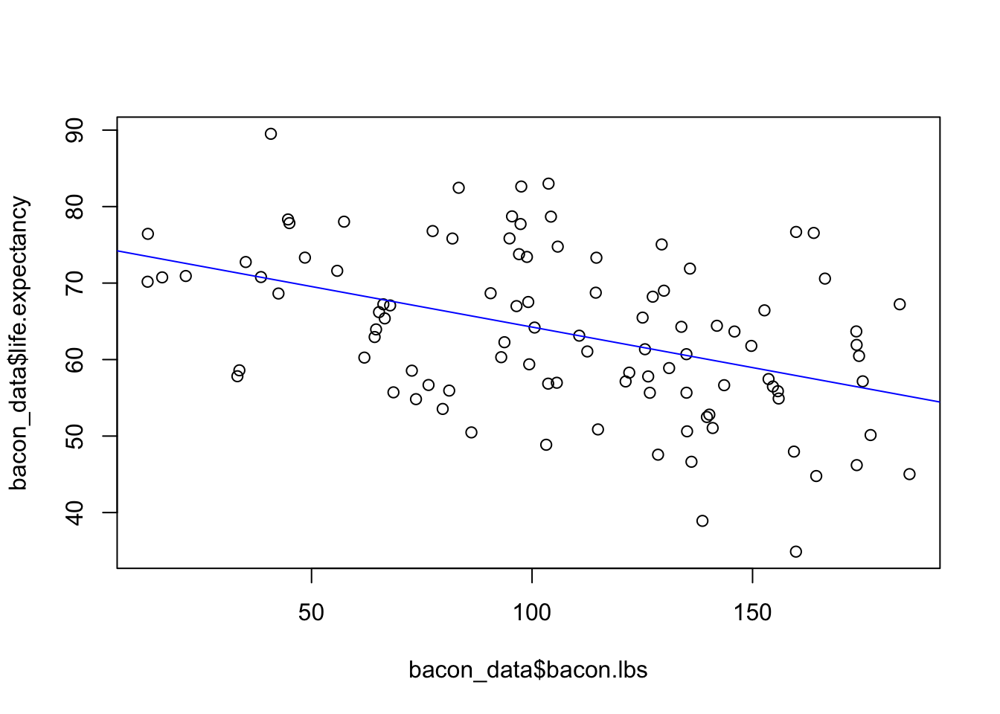
In this analysis of the effect of eating bacon is on life expectancy, we don’t expect for the amount of bacon to completely explain why one person lives longer than others. Therefore, we expect the bacon consumption will have a low \(R^2\) value. Indeed we can see above that it does have a low value. However, we also find that for every pound of bacon we eat we expect to lose between 51 days and 21 days of life. According to our fake data bacon doesn’t predict how long you are going to live, but it does have important effects on your life expectancy.
The lesson here is that we use linear regression to understand complex phenomena we should not expect to have high \(R^2\) values (no free lunches). This doesn’t always mean those models are useless– it depends on what you are trying to learn by forming the model!
11.5 Using Regression Models to Make Predictions
In many cases you do want to use linear regression on a data set to forecast the response variable (y) given a value for the explanatory variable (x). In the most basic sense we can do this by just plugging the new x variable into our best-fit regression model. For example, let’s think out the flight data set again and say we want to predict the flight time for a flight which will travel 1400 miles. Well our best fit values for the intercept and slope are:
res.flying$coefficients## (Intercept) distance
## 18.1939236 0.1264254Therefore, we can plug in our x value to the linear model: \[ T=\beta D+\alpha=0.1264*(1400)+18.19 \] which gives an estimate of 195.15 minutes of flying time.
However, we can do better than just providing a single best estimate for the flying time. Our statistical model can also give a prediction interval which is likely to contain the true flying time. This involves factoring in the size of the error terms \(\epsilon_i\) in our regression model \[y_i=\beta x_i+ \alpha+\epsilon_i.\] Of course we have assumed that the \(\epsilon_i\) terms are normally distributed with a mean 0 and a constant standard deviation \(\sigma_\epsilon\).
Therefore, a good start is to form the 95% prediction interval using the empirical rule \[(\beta x_{new} + \alpha-2\sigma_\epsilon, \beta x_{new} + \alpha+2 \sigma_\epsilon)\approx 0.95.\] However, this is slightly more complicated by the fact that we have some uncertainty in both the slope and y-intercept parameters \((\beta, \alpha)\) in addition to our imperfect knowledge of \(\sigma_\epsilon\). For one this means we should be using a t distribution instead of the empirical rule if we want to be precise: \[(\beta x_{new} + \alpha-t(0.025, N-2) se(y_{new}), \beta x_{new} + \alpha+t(0.025, N-2) se(y_{new}))\approx 0.95.\]
The standard error of \(y_{new}\) is given by the rather complicated formula: \[y_{new}=s_e \sqrt{1+\frac{1}{N}+\frac{(x_{new}-\bar{x})^2}{(N-1) s_x^2}}\] where \(N\) is the sample size, \(\bar{x}\) is the mean of the \(x\) variable, \(s_x\) is the standard deviation of the x variable and \(s_e\) is the standard error of the residuals.
Thankfully, we should not ever have to compute this by hand (or remember this formula). However, notice that \(se(y_{new})\approx s_e\) when \(x_{new}\approx\bar{x}\) and otherwise the size of the prediction interval will grow. This tells us we can make the most accurate predictions for \(x\) near the average value of \(x\) in the data set. Also, notice that \(se(y_{new})\approx s_e\) for very large data sets \(N\rightarrow \infty\). In these cases we can use the simplified rule of thumb for prediction intervals: \[ \text{Rule of Thumb:}\qquad y_{new} \pm 2 s_e\]
We can find \(s_e\) (the standard error for the residuals) for our model using the command:
sd(res.flying$residuals)## [1] 12.86345or by finding the correct line in the summary:
summary(res.flying)##
## Call:
## lm(formula = air_time ~ distance, data = flightNYC)
##
## Residuals:
## Min 1Q Median 3Q Max
## -46.475 -7.273 -1.248 6.470 81.136
##
## Coefficients:
## Estimate Std. Error t value Pr(>|t|)
## (Intercept) 18.193924 0.321725 56.55 <2e-16 ***
## distance 0.126425 0.000254 497.73 <2e-16 ***
## ---
## Signif. codes: 0 '***' 0.001 '**' 0.01 '*' 0.05 '.' 0.1 ' ' 1
##
## Residual standard error: 12.86 on 4991 degrees of freedom
## Multiple R-squared: 0.9803, Adjusted R-squared: 0.9802
## F-statistic: 2.477e+05 on 1 and 4991 DF, p-value: < 2.2e-16Therefore for our flying case we can estimate our prediction interval for the flying time for a 1400 mile trip as \(195.15 \pm 2*12.86\)=(169.43, 220.87).
If we require more accuracy (want to use the more complicated formula) then we can use the software to form the prediction interval. In R we can find the prediction interval with the following command:
predict(res.flying, data.frame(distance = 1400), interval = "predict", level = 0.95)## fit lwr upr
## 1 195.1895 169.9659 220.4132Notice this is almost exactly the same interval that our rule of thumb produced. If we want to form prediction intervals for a range of \(x\) values we can do this as well. The below code forms the prediction intervals and plots them alongside the data.
## How to make prediction intervals for flight times
values.predict = seq(100, 3000, 10) ##make a sequence of value to predict
predict.flying = predict(res.flying, data.frame(distance = seq(100, 3000, 10)), interval = "predict",
level = 0.95)
plot(flightNYC$distance, flightNYC$air_time, main = "Flying Distance versus Time Linear Model",
xlab = "Distance (Miles)", ylab = "Time (Minutes)", col = "blue", cex = 0.3)
lines(values.predict, predict.flying[, "lwr"], col = "black")
lines(values.predict, predict.flying[, "upr"], col = "black")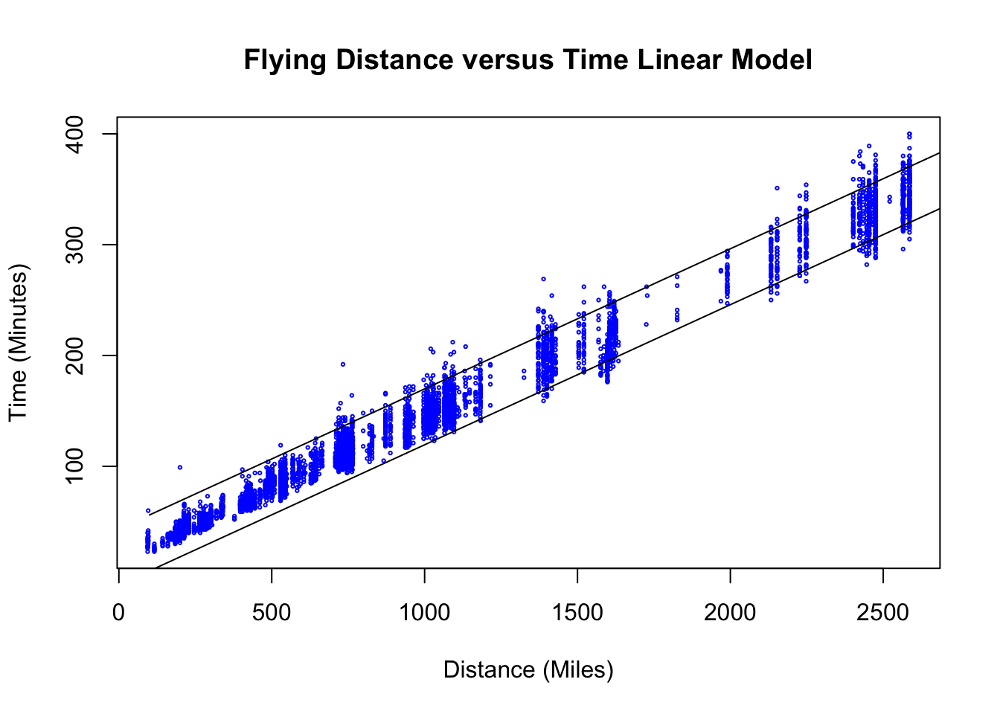
11.5.0.1 Some Warnings about Prediction Intervals
Some caution is advised when forming prediction intervals for regression models. Here are some warnings:
Prediction intervals are very sensitive to the assumptions of linear regression being strictly satisfied. For example, the residuals really need to have a normal distribution for our intervals to form accurate intervals.
Be careful using prediction intervals for value of the x values which are outside the range of observed values. Just because the assumptions of linear regression are satisfied for the data shown doesn’t mean they will be outside the range shown.
11.6 Homework
11.6.0.1 Concept Questions:
Are the following statements True or False?:
When conducting linear regression we assume that the error terms are independent
The \(R^2\) term measures the goodness of fit for a linear model
Linear models with a small \(R^2\) term should be discarded in all applications as they are poor predictive models.
An assumption of linear regression analysis is that the error terms have equal variance.
The least squares solution finds the minimum of the sum of the residuals squared.
The standard error of the residuals gives a measure of the predictive power of a regression model.
It is safe to form prediction intervals for any value of the explanatory variable we want.
The width of the prediction interval will decrease if the standard error of the residuals for a model decreases.
11.6.0.2 Practice Problems:
- If we fit a linear model for the effect of a pesticide dosage (gallons sprayed) on the yield of tomatoes (pounds) on our field and find the best fit slope is \(\beta=1.2\) and a 99% confidence interval for the slope is given by \((0.75, 1.25)\) what can we say about the effect of spraying an additional gallon of pesticide on our field on our crop yield?
- We have collected a data set on the amount of hours studying versus the grade on a final exam for 300 students. We find this plot has a slope a best fit slope of \(5.0\) with a 95% confidence interval of \((3.0,6.0)\). What can we conclude about the effects of studying for one additional hour? Do you expect this model to have a high \(R^2\) value?
11.6.0.3 Advanced Problems:
For each of these data sets conduct a full regression analysis including an exploratory scatter plot, fit a linear model, form confidence intervals for the parameters and perform diagnostics to determine if the assumptions of linear regression are satisfied.
Load the
cricket_chirpsdata set. Conduct a linear regression using the temperature as the explanatory variable and the chirps per second as the response variable.Load the
kidiqdata set. Conduct a linear regression analysis to see how well the mom’s IQ (mom_iq) relates to the kid_score) column giving the child’s IQ score. What can you conclude about the genetic components of intelligence?Load the
NBA_Draft_Datadata set. Perform a linear regression analysis with thePick.Numbercolumn as the explanatory variable and thePTScolumn as the response variable.Form a 99% confidence interval for the slope. What does this tell you about the value of an NBA draft pick?
About how many more points does the number one pick average than the 10th pick?
Form a prediction interval for the PPG average of the number 2 pick in the draft
Load the
seaice_dec_northerndata set. Conduct a linear regression analysis of this data set using the year as the explanatory variable and theextentcolumn as the response variable. Check the assumptions of linear regression using diagnostic plots, are any of the conditions violated?Load the
StudentsPerformancedata set. Conduct a linear regression analysis on this with theMath.Scorecolumn as the explanatory variable andWriting.Scoreas the response variable. Form a confidence interval for the slope parameter and interpret the meaning of this interval.Exponential Models: Load the
census.us.popdata set. This data contains the census population of the united states every ten years from 1790 to 2010. Make a scatter plot of theYearcolumn versus thePopulationcolumn. You should notice that the population grows roughly exponentially with the year. Therefore, we could try and fit a exponential model to this data: \[P=\alpha e^{\beta t}\] where \(t\) is the number of years since 1790 and \(P\) in the united states population. You might notice that this is not a linear model. However, we can turn this exponential model into a linear one by taking the logarithm of both sides. This gives \[\log(P)=\log(\alpha)+\beta t\]
Make two variables (x,y) to store the tranformed variables:
logpop = log(census.us.pop$Population)
t = census.us.pop$Year - 1790Now perform a linear regression to estimate \(\beta\) and \(log(\alpha)\). Perform some diagnostics on your regression. Are the assumptions of linear regression satisfied for our transformed data set?